1과목: 조경사
1. 고대 이집트 주택정원의 연못가에 세운 정자는?
2. 안동 하회마을과 관련이 없는 것은?
3. 20세기 초 건축, 조경, 공예 부문에 실용적이고 장식이 별로 가해지지 않는 것이 요구되어 생겨난 미학 용어는?
4. 다음 보기의 단면도와 같은 배치를 보이는 르네상스 시대의 별장 정원은?
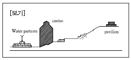
5. 경복궁 경회루에 대한 내용으로 틀린 것은?
6. 일본의 정토정원이 아닌 것은?
7. 보르뷔콩트(Vaux-Le-Vicomte)의 설명으로 맞지 않는 것은?
8. 조선시대 기관 중 원포(園圃)와 소채(蔬菜)에 관한 업무를 맡던 곳은?
9. 스페인의 무어양식의 특징은 중정(Patio)에 있다. 알함브라 궁의 파티오와 헤네랄리페 이 궁의 파티오 가운데 같은 이름으로 불렸던 곳은?
10. 다음 중 왕도(王都)에 배나무가 연이어져 심겨있었던 기록이 있는 국가는?
11. 조선시대 중기에 조영된 품(品)자형 상류주택으로 풍수지리사상과 방지원도형 연못이 조영된 다음 가도(家圖)의 사례지는?
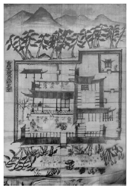
12. 각 나라 정원의 연결이 올바른 것은?
13. 초암풍(草庵風)의 정원조성으로 다정원(茶庭園) 양식을 창출한 사람은?
14. 중국의 사가정원 가운데 “해당화가 심겨져 있는 봄 언덕(해당춘오 : 海棠春塢)”이라는 정원이 그림과 같이 꾸며진 곳은?
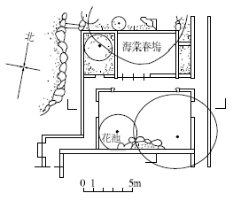
15. 이탈리아의 벨베데레원(Belvedere Garden)에 대한 설명으로 틀린 것은?
16. 다음 중 중국 전통정원에 영향을 끼친 문인으로 보기 어려운 인물은?
17. 청평사 선원(문수원 정원)에 관한 내용 중 틀린 것은?
18. 19세기 초 미국문화와 기후에 따라 부지에 적합하게 설계해야 된다는 점을 깊이 인식한 조경가는?
19. 통일신라시대의 대표적인 조경유적이 아닌 것은?
20. 오늘날 옥상정원(Roof Garden)의 효시로 볼 수 있는 고대의 정원은?
2과목: 조경계획
21. 다음 중 기능적 위계가 큰 도로의 순서대로 바르게 나열한 것은?
22. 대지면적이 500m2인 필지에서 기준층 건축 면적이 200m2이고, 5층 건물이라고 할 때에 건폐율(A)과 용적률(B)을 맞게 계산한 것은? (단, 모든 층의 면적은 기준층의 면적과 같음)
23. 일반적인 토지이용계획의 순서에 포함되지 않는 것은?
24. 개인적 공간(Personal Space)을 설명한 것 중 옳지 않은 것은?
25. GIS에서 사용되는 벡터모델의 기본요소가 아닌 것은?
26. 일반적으로 “장애인 등의 통행이 가능한 접근로”에 대한 설명 중 ( )안에 적합한 값은? (단, 관련 규정을 적용, 지형상 곤란한 경우는 고려하지 않는다)
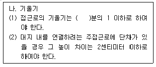
27. 조경계획 과정 중 공간배분 계획에 대한 설명으로 옳지 않은 것은?
28. 이용자수 추정 시 활용되는 “최대일률(피크율)”에 대한 설명 중 옳은 것은?
29. 도시ㆍ군계획시설의 결정ㆍ구조 및 설치기준에 관한 규칙에 명시된 보행자 전용도로의 구조 및 설치기준으로 옳은 것은?
30. 조경계획 과정에서 필요한 인문ㆍ사회환경 분석에 대한 설명으로 틀린 것은?
31. 자연공원법상 공원계획으로 지정할 수 있는 용도지구 중에서 공원자연보존지구의 완충공간(緩衝空間)으로 보전할 필요가 있는 지역을 지칭하는 용어는?
32. 미기후 조사 항목 중 ‘안개’ 및 ‘서리’는 주로 어느 지역에서 발생하는가?
33. 환경영향평가와 관련된 설명이 틀린 것은?
34. 다음 설명의 밑줄에 해당되지 않는 것은?
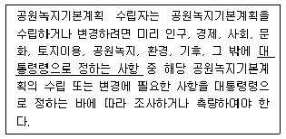
35. 자연공원에서 하여서서는 아니 되는 금지행위에 해당하지 않는 것은?
36. 지질도가 다음 그림과 같이 나타났을 경우 암석층 A의 경사각 표현으로 가장 적합한 것은?
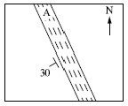
37. 습지보호지역에서 습지보전ㆍ이용을 위해 설치ㆍ운영할 수 없는 시설은?
38. 도로설계 시 ‘최소곡선장’이 기준치보다 짧을 때 발생되는 문제로 옳지 않은 것은?
39. 다음 중 시간 혹은 비용의 제약 등을 고려해 볼 때 주어진 시간 및 비용의 범위 내에서 얻을 수 있는 최선의 안을 말하는 것은?
40. 수중등에 관한 배치 및 시설기준에 관한 설명이 틀린 것은?
3과목: 조경설계
41. 다음 중 경관을 변화시키는 요인에 해당하지 않는 것은?
42. 한 도면 내에서 굵은 선의 굵기 기준을 0.8mm로 하였다면 레터링 보조선이나 치수선의 적절한 굵기에 해당되는 것은?
43. 주차장의 설계 시 이용할 주차단위구획(너비 × 길이)이 3.3m 이상 × 5.0m 이상의 기준에 해당되는 형식은? (단, 주차장법 시행규칙을 적용한다)
44. 인체의 치수를 기본으로 하여 전체를 황금비 관계로 잡아가는 독자적인 조화 척도는?
45. 조경설계기준 상의 “옥외계단” 설계로 옳지 않은 것은?
46. 다음 설명에 알맞은 형태의 지각심리는?
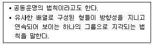
47. 다음 입체도를 제3각법 정투상도로 옳게 나타낸 것은?
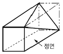
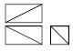
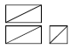
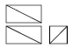
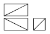
48. 아치(Arch)에 대한 설명으로 거리가 먼 것은?
49. 시각적 선호도 측정방법 중 정신생리 측정법에 대한 설명으로 옳은 것은?
50. 설계대안의 작성에 관한 설명으로 옳은 것은?
51. 프로젝트의 계획방향이 설정되면 조사 분석을 거쳐 계획ㆍ설계로 진행된다. 다음 중 설계과정의 설명으로 옳은 것은?
52. 색채이론의 내용이 틀린 것은?
53. 조경설계 기준상의 축구장의 배치 및 규격 기준으로 가장 거리가 먼 것은?
54. 다음 설명의 ( )에 가장 부적합한 것은?
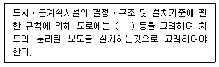
55. 투시도 작성 시 소점(消点, Vanish Point)을 설명한 것은?
56. 다음 [보기]의 설명 중 ㉠, ㉡에 적합한 것은? (단, 도시공원 및 녹지 등에 관한 법률 시행규칙을 적용한다)
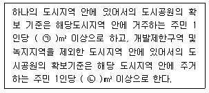
57. 도면결합법(Overlay Method)을 주로 사용하여 경관의 생태적 목록을 종합하여 분석에 활용한 사람은?
58. 디자인의 요소에 대한 설명으로 옳지 않은 것은?
59. 조경공간에서 배수설계 관련 설명이 옳지 않은 것은?
60. 조경설계기준상 조경구조물의 계획ㆍ설계 설명이 옳지 않은 것은?
4과목: 조경식재
61. 나자식물 중 상록침엽수가 아닌 것은?
62. 여의도공원 내 생태적인 공간에 식재할 수 있는 교목성상의 수목으로 부적합한 것은?
63. 조경 식재도면의 식물 리스트 작성 시 이용하기에 가장 편리한 순서는?
64. 다음 수목 중 생울타리용으로 양지 바른 곳에 가장 적합한 것은?
65. 다음 중 같은 속(屬)에 속하는 식물들로만 구성된 것은?
66. Euonymus japonicus Thunb.의 식재기능으로 가장 거리가 먼 것은?
67. 조경설계기준에서 제시한 표 중 “H”에 해당하는 수치는?
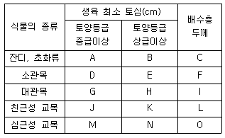
68. 침식지 및 사면녹화에 적합하지 않은 수종은?
69. 중부 임해공업지대에서 공해와 한해의 피해를 가장 적게 받고 생육할 수 있는 수종은?
70. 페튜니아(Petunia hybrida)의 설명이 틀린 것은?
71. 다음 중 덧파종에 대한 설명으로 옳은 것은?
72. 쌍자엽식물(A)과 단자엽식물(B의 일반적인 특징 비교 중 틀린 것은?
73. 조경기준(국토교통부)상에 “대지안의 식재기준” 중 ㉠~㉣의 내용이 틀린 것은?
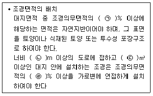
74. 붉은(赤)색 계통의 단풍이 들지 않는 수종은?
75. 일반적으로 우리나라의 4계절 구분 중 개화시기가 다른 수종은?
76. 식물의 질감과 관계되는 설명 중 옳지 않은 것은?
77. 다음 조경식물의 규격에 관한 설명에 적합한 용어는?
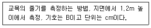
78. 생태적 천이의 과정이 순서대로 나열된 것은?
79. 가을에 개화하여 꽃을 감사할 수 있는 지피식물은?
80. 다음 중 실내정원 식물인 “페페로미아”의 특징으로 틀린 것은?
5과목: 조경시공구조학
81. 거푸집에 가해지는 콘크리트의 측압이 크게 작용하는 경우에 해당하지 않는 것은?
82. 구조부재에 작용하는 축직교 하중은 부재상의 각 점에서 부재를 자르려고 하는데 이외력의 세력을 무엇이라 하는가?
83. 공동도급(Joint Venture) 방식의 장점에 대한 설명으로 옳지 않은 것은?
84. 조경용 합성수지재는 열경화성수지와 열가소성수지로 구별된다. 다음 중 열경화성수지에 해당되지 않는 것은?
85. 다음 중 목재와 관련된 설명으로 틀린 것은?
86. 콘크리트의 블리딩(Bleeding) 현상에 의한 성능저하와 가장 거리가 먼 것은?
87. 다음 사다리꼴(균등측면) 개수로의 관련식으로 옳은 것은?
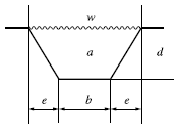
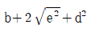
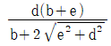
88. 다음 그림은 기둥을 도해한 것이다. 단면이 같고 하중의 크기가 동일할 때 좌굴장에 대한 설명 중 옳은 것은?
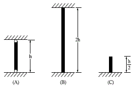
89. 도로와 하수도의 중심선과 같은 선형 구조물의 위치를 평면적으로 표시하는데 가장 적합한 방법은?
90. 건설 표준품셈에서 다음의 종목(A) 중 설계서의 단위(B) 및 단위 수량 소수위 기준(C)이 틀리게 구성된 것은? (단, 나열순은 A - B - C의 순서임)
91. 고사식물의 하자보수 면제 항목에 해당되지 않는 것은?
92. 그림에서 B점의 반력(VB)값은?
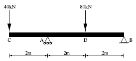
93. 그림과 같이 한쪽은 깎기이고, 한쪽은 쌓기일 경우에 쓰이는 방법으로 매립에 이용되는 절토와 성토 방법은?
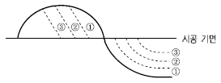
94. 횡선식 공정표와 비교한 네트워크 공정표의 설명이 틀린 것은?
95. 배수계획에서 다음 그림을 설명한 사항 중 옳은 것은?
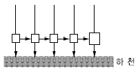
96. 등고선이 높아질수록 밀집하여 있으며, 반대로 낮은 등고선에서는 간격이 멀어져 있는 경우는 다음 중 지형도의 어느 것에 해당하는가?
97. 수준측량의 야장 기입법 중 중간점(I.P)이 많을 경우 가장 편리한 방법은?
98. 다음 중 조경시설물 재료에 대한 일반적인 요구 성능이 아닌 것은?
99. TQC(Total Quality Control)를 위한 도구 중 다음 설명에 적합한 것은?
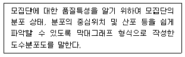
100. 단면의 형상에 따라 역T형, L형으로 나누어지며, 옹벽자체 중량과 기초 저판 위 흙의 중량에 의하여 배면토압을 지탱하게 한 형식은?
6과목: 조경관리론
101. 고속도로의 녹지관리 상 기본적 입장으로 볼 수 없는 것은?
102. 농약 혼용 시 주의하여야 할 사항으로 틀린 것은?
103. 잔디를 정기적으로 적당한 높이에서 예초할 때의 효과로 거리가 먼 것은?
104. 안전관리 사고 중 관리하자에 의한 사고는?
1⑤. 토성의 분류 방법 중 자갈의 크기는 입경이 몇 mm 이상인가?
106. 조경관리의 특성으로 옳지 않은 것은?
107. 토양의 양이온교환용량(CEC)에 대한 설명으로 옳은 것은?
108. 수목관리의 설명이 옳지 않은 것은?
109. 고속도로 주변 녹지관리를 위해 등짐형 동력예초기로 제초작업을 하는 경우 착용해야 하는 개인보호구로 적절하지 않은 것은?
110. 잔디종자는 땅을 잘 갈아서 고른 뒤에 파종한다. 파종 시 주의할 사항으로 옳은 것은?
111. 다음의 특징을 갖는 해충에 대한 방제약제는?
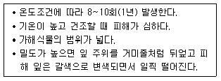
112. 조경수목에 발생하는 생육장해의 설명이 틀린 것은?
113. 요소의 질소함유량을 50%라고 할 때 30kg의 요소 비료 중에 함유된 질소의 성분 함량은?
114. 살충제의 설명으로 옳지 않은 것은?
115. 조경시설물 중 낙석방지망에 관한 설명이 틀린 것은?
116. 병원체가 다른 지역이나 식물체에 전반(傳搬)되는 방법 중 주로 바람에 의해 이루어지는 것은?
117. 지오릭스 15%, 분제 10kg을 2.5%의 분제로 만들려면 몇 kg의 증량제가 필요한가?
118. 지주목 관리에 대한 설명이 옳지 않은 것은?
119. 석회석(Limestone)을 태워 CO2를 제거시켜 제조하는 석회질 비료는?
120. 다음 중 실내식물의 인공조명에서 가장 경제적이면서 좋은 것은?